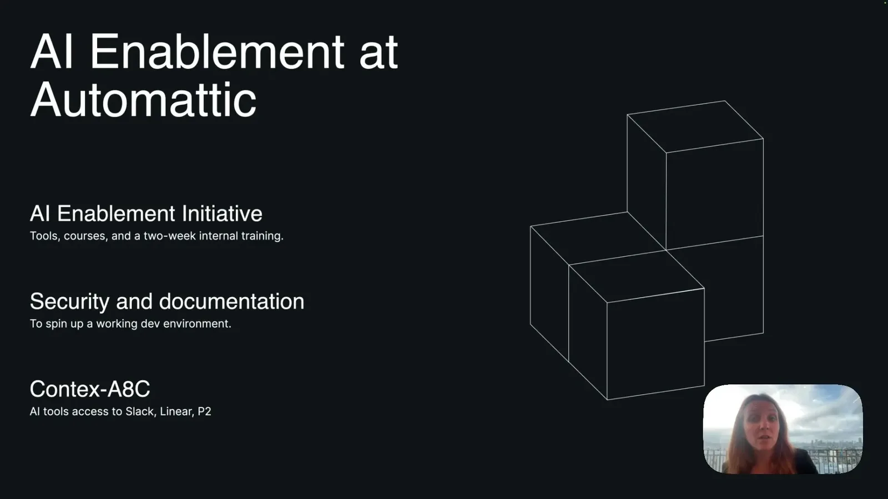
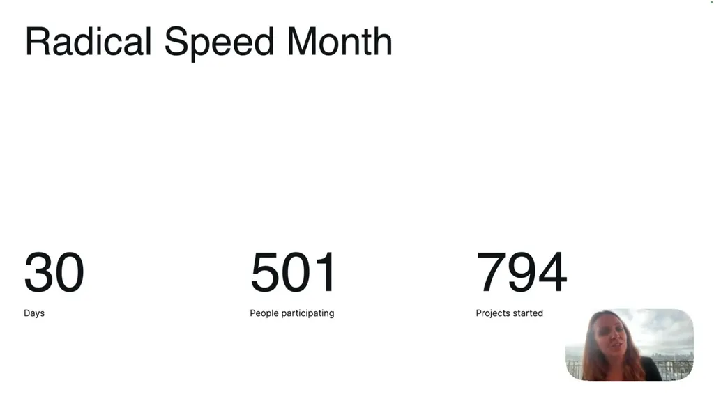
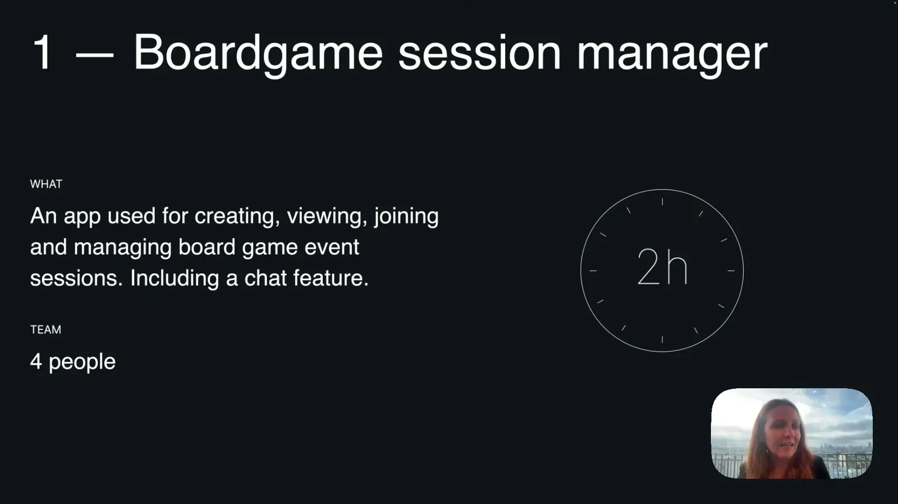
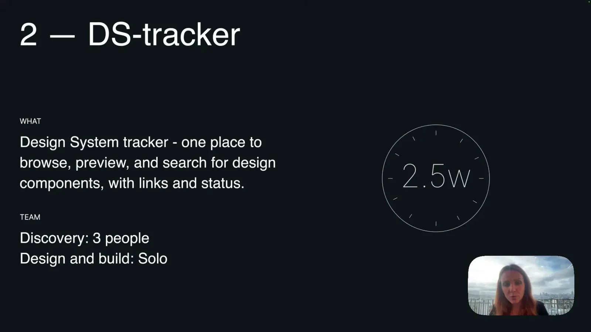
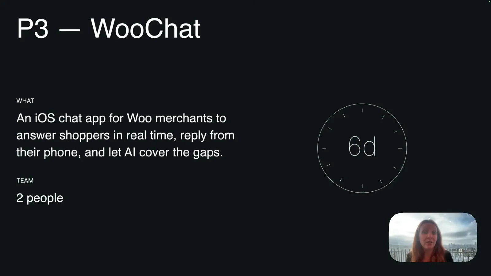
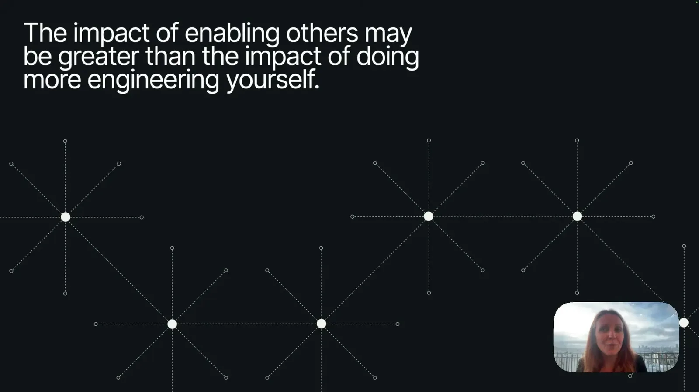
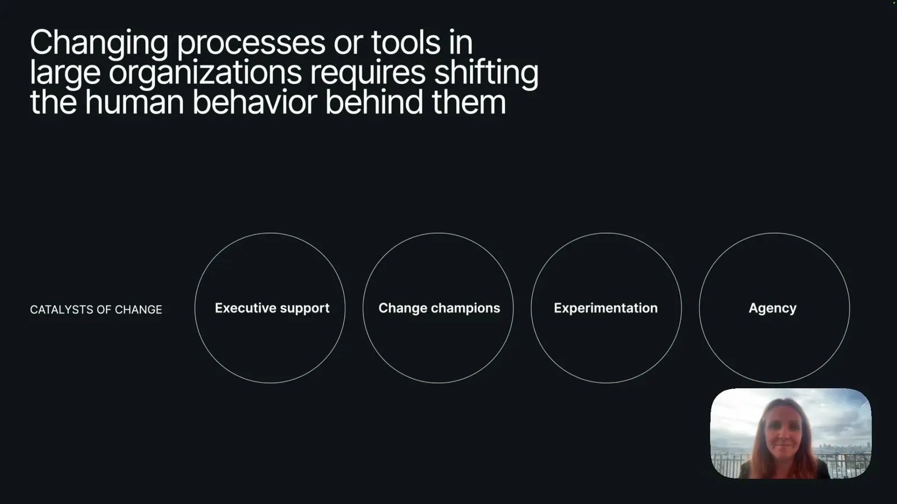

500 people vibe-coded for 30 days. I was one of them.
Automattic ran Radical Speed Month with about 500 employees and 794 projects in 30 days, backed by a two-week AI enablement course and an internal Context AC MCP knowledge server.
If you only read one thing
- Automattic ran a 30-day 'Radical Speed Month' where two-person teams paused roadmap work to ship projects; roughly 500 people, about a third of the ~1,400-person company, started around 794 projects in the first round.
- The speaker, a product designer with no prior professional coding experience, shipped a design-system status tracker solo in 2.5 weeks and an iOS chat feature in 6 days, aided by a prior 2-week AI enablement course and an internal MCP server (Context AC) exposing the company's documented knowledge.
- Her biggest takeaway: an engineer's impact from enabling non-engineers to contribute can exceed their impact from doing more engineering themselves.
This traces how Automattic's enablement course and internal MCP server fed into Radical Speed Month, and how the speaker's three projects produced her process-shift and enablement takeaways (ours).
Why this talk is a blueprint, not a take (ours)
Scope: An internal, org-wide 30-day program (Radical Speed Month) that pairs employees, including non-engineers, to ship real software with AI coding tools, layered on top of prior investment in a company-wide AI course and an internal knowledge-access MCP server.
A dated, named case of a large distributed company (about 1,400 people) pausing roadmap work for a third of its staff and letting two-person teams ship real projects in 30 days, with concrete before/after build times (2 hours, 2.5 weeks, 6 days) and a described process inversion from Figma-first design to prototype-first design. It also names the four organizational conditions the speaker credits: executive support, change champions, room for experimentation, and agency.
Prerequisites the talk implies:
- Prior investment in role-specific AI training for the whole organization, not just engineers
- An internal knowledge layer (the talk's Contex-A8C MCP server) that AI tools can query so builders don't start from zero context
- Security and environment documentation good enough for a non-engineer to independently spin up a working dev environment
- Executive backing to let a meaningful share of staff pause roadmap work for a month
What the talk does not say:
- No outcome data for the other roughly 794 projects or 500 participants, only the speaker's own three
- No cost, headcount-hours, or opportunity-cost accounting for pausing a third of the company's roadmap work for 30 days
- No detail on how projects were selected, reviewed for security, or whether any were later killed or judged failures
- No measure of code quality, maintenance burden, or who owns these projects (like DS-tracker and WooChat) after the month ended
- No comparison to how the other two-thirds of the company not in round one performed or whether round two happened
If you were to replicate one thing first: Before scaling to hundreds of people, run one small mixed-role team (a designer, an engineer, a product lead) through a short, time-boxed build sprint, on a project with no production risk, specifically to surface who becomes an enabler versus a builder.
| Component | What it does (from the talk) | Evidence | Slide |
|---|---|---|---|
| 2-week AI enablement course | Role-specific, hands-on immersive training that every Automattic employee goes through, run before Radical Speed Month | c2 · 03:05 |  |
| Contex-A8C (MCP server) | Internal MCP server giving AI tools access to the company's documented knowledge (Slack, Linear, P2), used daily for research and planning | c8 · 03:36 | |
| Radical Speed Month | 30-day, org-wide initiative pairing employees to pause roadmap work and ship real projects with full autonomy; about a third of the company (~500 people) started ~794 projects in round one | c1 · 04:40 |  |
| Boardgame session manager (P1) | A mixed 4-person team built a create/join/manage board-game-session app with chat, in 2 hours, during the AI enablement course | c10 · 06:13 |  |
| DS-tracker (P2) | Design-system status tracker pulling links from GitHub, Storybook, and Figma; a 3-person discovery phase followed by a solo design-and-build over about 2.5 weeks | c3 · 10:55 |  |
| WooChat (P3) | iOS chat app for WooCommerce merchants with WordPress.com and Jetpack authentication and an AI agent that answers shopper questions; built from zero to a working proof of concept in 6 days by two designers | c4 · 13:32 |  |
| Prototype-first process | Team planned, then built a working prototype directly, then returned to Figma only for visual fine-tuning and a mood board, inverting her normal Figma-first process | c6 · 15:36 | |
| Enablers-over-engineers lesson | Her top takeaway from P1: an engineer's impact from enabling teammates to contribute can exceed the impact of doing more engineering personally | c5 · 08:52 |  |
| Scaling advice for large orgs | Give people access to the tools, find enablers and champions, create space for experimentation, and give people the agency to break out of habits | c7 · 17:09 |  |
Automattic's AI enablement before the experiment
- Automattic is a fully distributed, ~1,400-person company behind WordPress.com, Jetpack, WooCommerce, Tumblr, and Beeper.
- Before Radical Speed Month, the company ran a two-week, role-specific AI enablement course for every employee and built an internal MCP server, Contex-A8C, that gives AI tools access to years of documented institutional knowledge across tools like Slack, Linear, and the internal blog system P2.
“We are around 1,400 people and we're fully distributed which is pretty interesting for also what what”
said at 00:30“Then the AI enablement was initiated where every single employee goes through a two-week course designed specifically for their role”
said at 03:05“an incredibly helpful tool that I that I use every day for research and planning is context AC. It's an MCP server that gives AI tools access to all of the knowledge and data”
said at 03:36Radical Speed Month: scale and format
- The 30-day initiative paired employees to pause roadmap work and ship real projects with full autonomy, rolled out in stages.
- In the first round, about a third of the company (~500 people) participated and started around 794 projects.
“we had about a third of the company participating in the first round. That's around 500 people that started around 794 projects in these 30 days”
said at 04:40Three projects, three speed benchmarks
- Her first project, built in a 2-hour in-person exercise with a mixed 4-person team (two designers, an engineer, a product lead), was a board-game session manager for creating, joining, and chatting in game sessions.
- Her second, a design-system status tracker pulling from GitHub, Storybook, and Figma, had a three-person discovery phase but was designed and built by her alone in about 2.5 weeks.
- Her third, an iOS chat feature for WooCommerce merchants with WordPress.com authentication and an AI-answering agent, went from zero to a working proof of concept in 6 days with a fellow designer.
“as a group of four we had uh 2 hours to build something together. We were two designers that aren't super comfortable in code, an engineer, and a product lead. And we decided to build”
said at 06:13“the discovery portion was three people, but the design and build was just myself. And it took around 2 and 1/2 weeks to build this”
said at 10:55“In only 6 days, we went from zero to uh through the entire process to building an iOS chat for WooCommerce merchants that um allows them to answer shoppers in real time”
said at 13:32What shifted in the design process
- Normally her process started and stayed in Figma until high fidelity.
- On the third project, the team instead planned, then built a working prototype directly, and only returned to Figma afterward for visual fine-tuning and a mood board -- a process inversion she has continued in her daily work.
“we had uh, very good plan. Then we um, built the the the prototype or the product and then we went back into Figma to just come back to it in a visual sense to build a mood board”
said at 15:36Lessons: enablement over individual output, and advice for large orgs
- Her top takeaway from the first project was that an engineer's impact from enabling teammates to contribute can exceed the impact of doing more engineering personally.
- Her advice for replicating this at large-organization scale: give people access to the tools, identify enablers and champions, create space for experimentation, and give people the agency to break out of established habits.
“if you're an engineer, the impact that you have when you enable others may be far greater than the impact of doing more engineering yourself”
said at 08:52“So, provide your people with the access to the new tools, find your enablers and champions, create space for experimentation, and and give them agency so that they can”
said at 17:09Commentary (ours)
The 794-projects-in-30-days figure is a useful benchmark for what 'give people agency plus AI tools' produces at scale, but the talk doesn't report how many of those projects survived past the month or made it into production -- that follow-through number would be the real test of whether this generalizes beyond a novelty sprint (ours).

Underlying detail — every claim, typed and timestamped (10)
| Stance | Claim | t |
|---|---|---|
| asserts | Automattic is a fully distributed company of around 1,400 people. | 00:30 |
| asserts | Automattic runs a two-week, role-specific AI enablement course for every employee. | 03:05 |
| asserts | Automattic built an internal MCP server, Context AC, giving AI tools access to years of documented company knowledge. | 03:36 |
| asserts | In the first round of Radical Speed Month, about a third of the company (roughly 500 people) started around 794 projects in 30 days. | 04:40 |
| asserts | The speaker's design-system status tracker had a three-person discovery phase but was designed and built solo in about 2.5 weeks. | 10:55 |
| asserts | An iOS chat feature for WooCommerce merchants went from zero to a fully working proof of concept in 6 days. | 13:32 |
| recommends | An engineer's impact from enabling non-engineers to contribute may exceed the impact of doing more engineering themselves. | 08:52 |
| asserts | The team's process inverted from Figma-first to plan-then-prototype, returning to Figma only afterward for visual fine-tuning. | 15:36 |
| recommends | Large organizations replicating this should provide tool access, identify enablers and champions, create space for experimentation, and give people agency. | 17:09 |
| asserts | In an in-person AI training exercise, a mixed four-person group (two designers, an engineer, a product lead) built a board-game session manager app in 2 hours. | 06:13 |
Machine-readable copy embedded in this page (script#ontology) and in the corpus ontology.